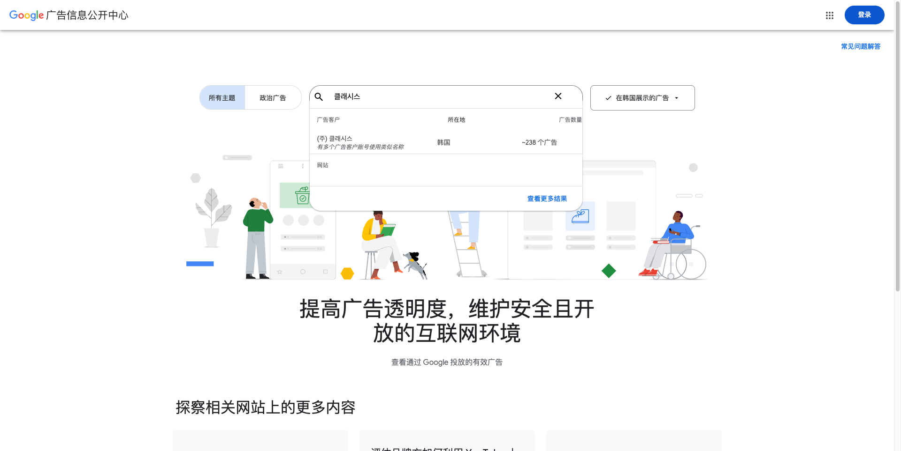

01
活动类型占比
19公开动作
展会 / 外部会议8 · 42%
品牌 PR / 扩张5 · 26%
自办活动4 · 21%
Academy 培训2 · 11%
2026 · JAN—AUG / GLOBAL MARKET INTELLIGENCE
从巴黎到曼谷，Classys 以专业展会、自办峰会、医生教育和品牌背书，构建覆盖临床、渠道与客户的全球传播网络。
数据更新至 2026.09.18
公开来源 · 含社媒全年核验
明确城市覆盖 8
专业展会
与外部会议
峰会 / 伙伴
及客户培育
Academy
临床教育
品牌 PR、行业影响
与市场扩张
ACTIVITY MIX & SCALE
19 项公开活动按展会、自办活动、Academy 和品牌传播分类，并按全球大型、区域专业和品牌传播三个规模层级展示。
展会 / 外部会议8 · 42%
品牌 PR / 扩张5 · 26%
自办活动4 · 21%
Academy 培训2 · 11%
JPM Healthcare Conference
公开预计行业参与者
巴西收购后
可直接覆盖客户触点
ACTIVITY INDEX
按活动级合并预告、现场与复盘。
点击卡片查看动作、产品与来源。
WHAT WE CAN LEARN & DO
直接对应其 2026 年活动做法，分别列出可借鉴方式和可优先开展的补位活动。
巴黎伙伴会议 + 全球客户峰会 + IMCAS
在大型展会前集中安排渠道会和客户峰会，让经销商沟通、医生教育和展台获客共享同一批资源。
在中国或重点区域做“展前闭门会—展中体验—展后城市巡讲”，并为每个环节设置报名、预约和线索跟进。
AAD、ASLMS、KOAT、韩国专业学会
按皮肤科、激光医学、肥胖管理等专业人群选择会议，使产品与具体治疗场景对应。
举办细分适应症病例赛、联合治疗研讨会和诊所经营课，覆盖其公开活动中较少出现的病例共创与经营内容。
LATAM Academy、Seoul Academy
用理论课程、设备实操和证书支持降低医生首次使用门槛，同时服务医生和渠道培训。
建立分级认证、导师带教、复训和病例随访机制，把一次培训变成持续医生社群。
Ultraformer MPT、Volnewmer 贯穿多类活动
在展会、峰会、培训和奖项传播中反复使用同一组核心产品，持续强化市场记忆。
围绕联合治疗、操作效率、耗材经济性、售后服务和真实病例结果建立差异，避免只做参数对比。
巴西收购、拉美 Academy 与本地教育
把分销网络、临床教育和新品导入放在同一地区推进，提升区域市场执行速度。
优先选择其公开活动覆盖较少的城市，开展本地 KOL 共创、装机客户开放日和渠道联合路演。
产品奖项、ESG AAA、JPMHC 行业发声
同时面向医生、渠道和投资者传播产品荣誉、企业治理与行业观点，扩大品牌信任来源。
增加真实世界研究、长期随访、设备运营数据和客户复购案例，让活动内容更接近采购决策。
CHANNEL ARCHITECTURE
“广告”不只指付费投放。公开证据显示，2026 年传播以活动内容、官网专题与专业圈层为核心；付费媒体预算与投放明细未公开。
Exhibitions / Events 专题页承担活动预告、日期地点、展位和报名承接，是最稳定的自有媒体入口。
通过 IMCAS、AMWC、AAD、ASLMS、KIMES 等专业会议，面向医生、诊所和经销商展示设备与临床应用。
巴黎与首尔自办活动连接客户和渠道，以年度计划、最佳实践、产品沟通和伙伴表彰提升关系深度。
理论、实操、治疗方案与证书支持，把产品传播转化为临床体验和专业信任。
Korea Brand Hall of Fame 三连冠（2024–2026）、MSCI ESG AAA，分别强化产品认知与企业可信度。
Instagram 双账号高频运营（国际 161 帖/年 + 韩国 60 帖/年）；韩国明星 TV / 数字广告战役与 YouTube 广告片、地铁 OOH 组合投放。
METHODOLOGY & LIMITS
Classys 全球官网、韩国官网、PR Center、官方活动页、报名页、邀请函、公司历史页、IR 材料，Instagram @classys.inc / @classys_kr（2025.09—2026.09 全年帖子登录态逐条抓取，含日期、点赞、评论与全文案）及韩国官方 YouTube 频道。活动日期、地点、展位和公开结果均可回到对应来源核查。
下载社媒原始数据 ↓
INSTAGRAM FULL-YEAR AUDIT · 2025.09—2026.09
@classys.inc 社媒核验
@classys.inc · 国际号
Volnewmer（75 帖）、Ultraformer MPT（36 帖）、VOLFORMER 组合疗法（30 帖）、IMCAS（22 帖）、Quadessy（19 帖）、The Red Edition（12 帖，2026-08-27 起）。多语言区域 KOL 共创：印尼、巴西、缅甸、克罗地亚本地医生内容。
韩国号 @classys_kr：1.8万粉丝 · 149 帖 · 年帖 60 · 均赞 127。内容 = 明星官宣（蔡秀彬、朴叙俊）、ASLS / 新机发布、Volnewmer VIP Dinner（2026-08-13）。
广告费 2025 全年 176 亿韩元（+37.2%）· 2Q26 单季 51 亿（+103.5%）· 1H26 105 亿（+71.6%）；2025 年 Academy 颁发 1,500 张证书 / 23 国 / 同比 1.7 倍；全年用户会议 5,000 人；全球 KOL 医生 200+；累计论文 85+（58 篇 SCIE）；Shurink 系列累计销量 2 万台+（동아일보 2026-01-22 与 JPMHC 稿互证）。
付费广告投放实锤 —— 韩国官方 YouTube 公开数据
Classys 将所有 TV / 数字广告片上传至韩国官方频道 클래시스（3,510 订阅 · 105 视频），近一年广告视频总播放约 6,000 万+；英文频道 @classys_inc 已停更约 2 年。每条广告配 making / 采访等 3–5 条衍生内容。
两账号全年 0 条 IG paid partnership 标签——韩国预算走明星 TV 广告 + YouTube + 地铁/写字楼 OOH；海外预算走区域 KOL 共创。
官方透明度工具证据（2026-09-21 核查）
